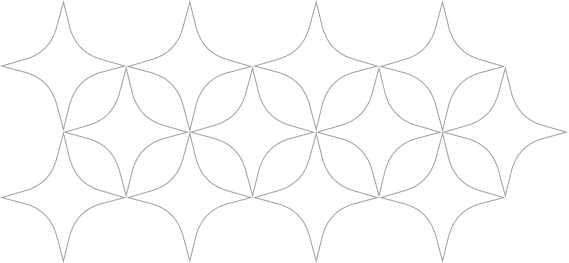
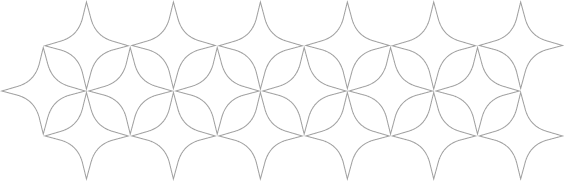
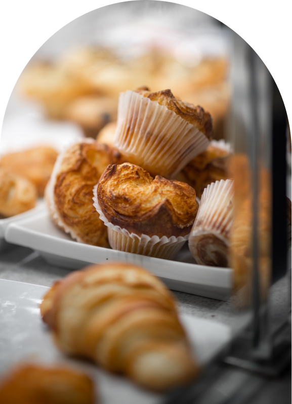

NATURE BREAD

以時間、季節與老麵，釀成日常餐桌的每一條麵包。
我們相信，好麵包來自最單純的事：一把當季的麥、一缸活著的老麵，以及願意等待的時間。從磨粉、揉製、發酵到出爐，每一道工序都在店內完成，不加乳化劑，也不使用人工香料。小麥本身的甜與香氣，需要足夠長的靜置才會浮現，我們願意為此把時間拉長，讓每一條麵包從第一口到最後一口，都帶著當季應有的味道。
清晨五點，烤箱門一開。
有機的西點麵包不只講究風味，也照顧身體。我們以低糖、低油、天然酵母為原則， 讓每一口都吃得「安心」、「乾淨」、「營養」，在日常裡慢慢養成身心平衡的好狀態。

Gothel's Garden 起於一間只有六坪的小店。
我們從一鍋老麵開始，記錄每一天的溫度與濕度，讓發酵成為與季節對話的方式。夏天縮短一小時，冬天多等一個晚上——麵團會自己說出它準備好了沒有。
十二年過去，配方換過無數次，唯一沒變的是：把麵包當成一份要送給家人的禮物。
About